Short, step-by-step help for each part of the app. Choose your role to see only what you need.
Not installed yet? See how to install the app. Inside the app, tap Help in the menu.
Getting started
- Sign in with the access PIN your administrator gave you. Never share your PIN.
- Find your way. On a phone the screens are in the green bar at the top: slide it left or right to see them all. On a computer they are on the left.
- You only see what you are responsible for. A class leader sees their class, a registrar sees the meetings given to them, and so on. Your name and role are shown at the top.
- Sign out when you use someone else's phone: tap Sign out next to your name.
Dashboard and statistics
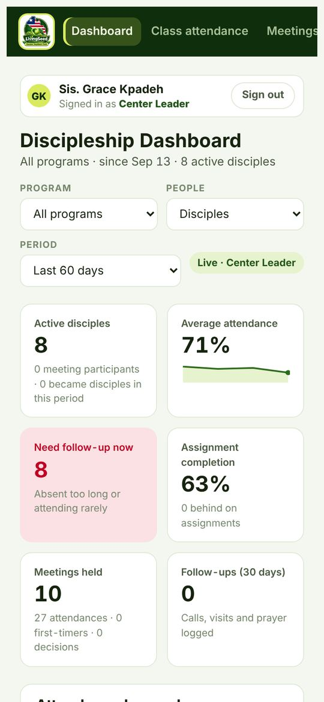
- Dashboard shows attendance, new people, decisions and who needs follow-up. Leaders see only the classes and programs they lead.
- Use the choices at the top (period, program, disciples or everyone) to change what the numbers cover.
- Statistics breaks the numbers down by area, church, age, gender, program and counselor. Every table has Download and Copy.
Meetings and outreaches
Open Meetings. First you see Meetings at a glance: today's meetings, the last 90 days, new faces, decisions waiting, newcomers to invite to a class and regulars who stopped coming.
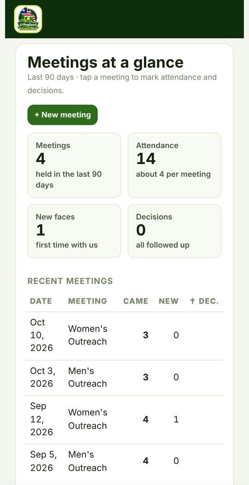
Mark who came
- Tap Mark now on today's meeting, or tap a meeting in the list. Program leaders and center leaders: tap + New meeting to create one first.
- Someone who came before: type part of their name or phone number in Find a returning person and tap their name.
- Someone new: tap + Register a newcomer, fill in what you can (first and last name are needed) and save. They are marked present.
- For people on the list, tap Present, Late or Excused. Tapped by mistake? Tap the same button again to undo.
- Tap Save attendance.
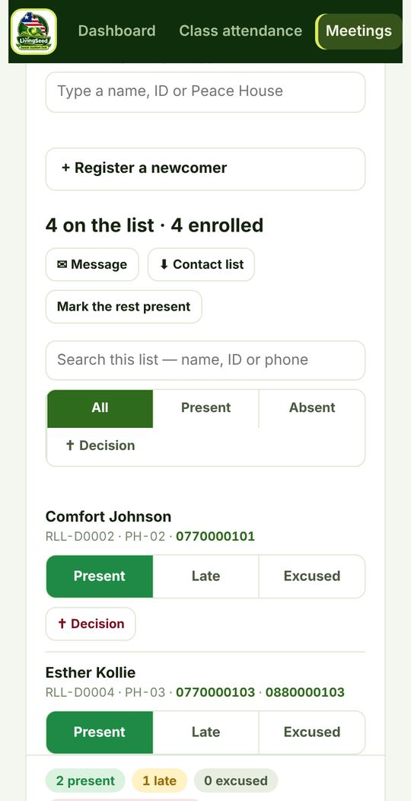
- Search this list and the All / Present / Absent / ✝ Decision buttons help you find people in a long list.
- The boxes at the top count who registered, who came and the decisions — for this meeting only.
- ⬇ Contact list downloads everyone on this meeting's list.
- Women only / Men only meetings only accept people of that gender.
Recording a decision
- At the meeting, find the person (mark them present first).
- Tap ✝ Decision on their row.
- Tick what they decided: To be born again, To rededicate my life to Christ, To follow Jesus in discipleship, Responded to the Word of God, or Other (type what).
- Add a short note if you like, and save.
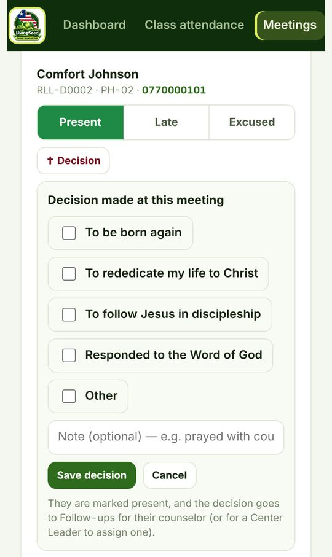
The decision goes to Follow-ups, where a center leader gives the person a counselor.
Discipleship class attendance
Open Class attendance. First you see Your classes at a glance: classes not marked yet, attendance, who missed 3 classes or more, and visitors you can invite.
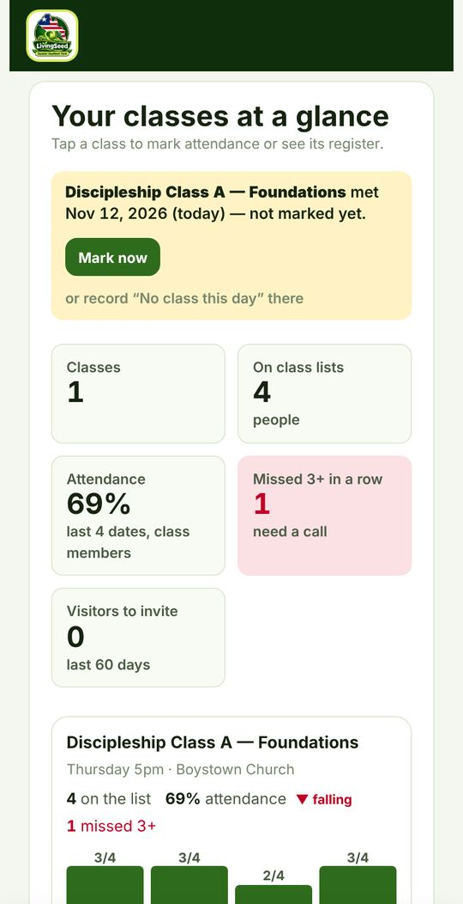
Mark a class
- Tap Mark now, or tap the class. Check the date (it chooses the last class day for you).
- Tap Present, Late, Absent or Excused for each person. Mark the rest present does everyone not yet marked.
- Tap Save attendance. Anyone on the class list who is not marked is saved as Absent.
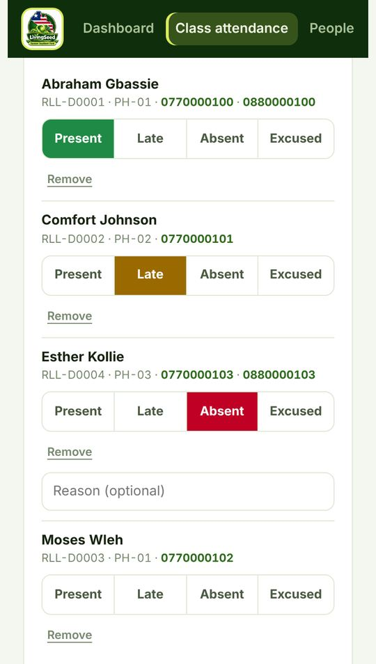
New people and visitors
- Type a name in Add someone to this class. Tap + Add to class to put them on the class list, or Visitor today if they are only visiting.
- Someone not in the tracker yet: tap + New person. Tick Just visiting today if they are not joining the class.
- Visitors are marked Visitor for that day only and are never counted absent. If a visitor decides to join, tap + Join class on their row.
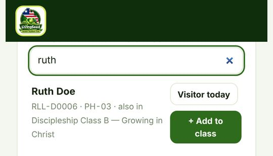
When there was no class
Tap No class this day, choose Venue not available, Leader not available or Other reason, and save. Nobody is marked absent for that day. If the class did meet after all, just mark attendance and save.
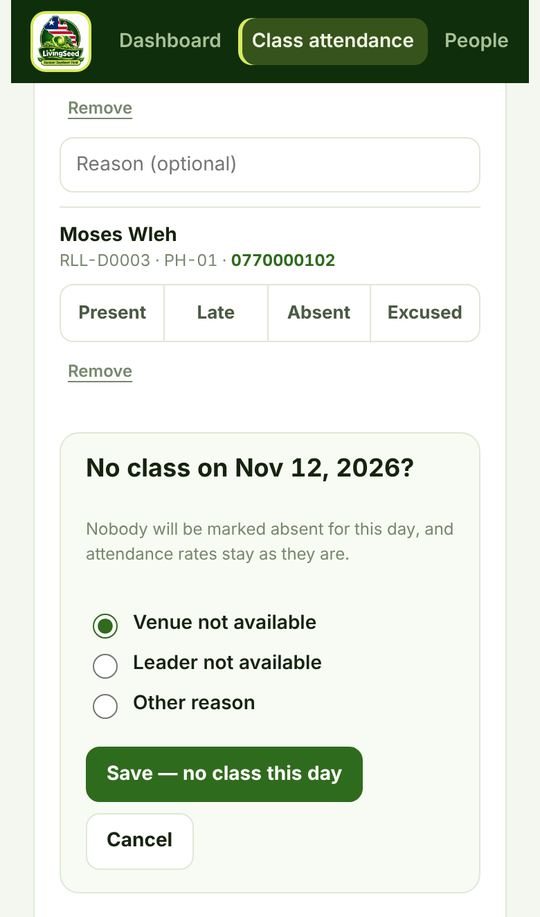
See all the marks
Switch to Attendance register at the top: everyone against every date, with P, L, A, E, V (visitor) and — (no class). Tap a date to open and change it. ⬇ Download register saves it for Excel.
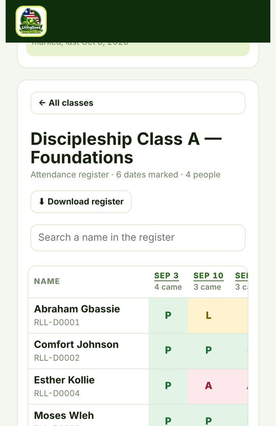
Assignments
- Open Assignments and choose the class.
- Tap + New, give the assignment a title and due date, and save.
- Open the assignment and tick who completed it. Save.
Sending an SMS to many people
Open Messages. The SMS goes from your own phone with your own credit; the app helps you choose the people, cleans the numbers to +231 … and keeps a record. There are three steps: ① Choose people → ② Write → ③ Send.
① Choose people
- Quick picks tick a whole group in one tap: a class, who came to the last meeting, decisions in the last 30 days, who missed 3+ classes, new people, or your own saved lists. Tap again to untick.
- Find people: choose a class or program, then All dates or one date, then Who — everyone on it, who came, or who did not come. Narrow further by gender, area, age group or decision. Then tap Tick all shown, or tick people one by one.
- Ticks are kept while you change the filters, so you can add people from several programs. Show only ticked lets you check your list.
- Paste phone numbers from WhatsApp or Excel; they are matched to people where possible.
- ★ Save ticked people as a list (for example “Choir”) to use it again with one tap.
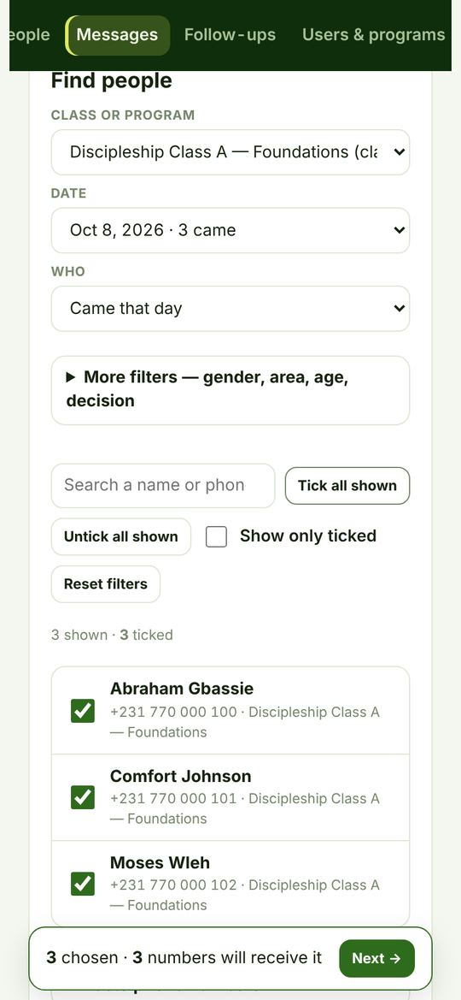
② Write
Type the message or start from a template. Long messages are fine — they arrive as one message — but the counter shows how many SMS each costs (160 letters each; emojis and curly quotes make it 70). {first name} works only when sending One by one.
③ Send
- Check the numbers that will receive it and who is left out (no valid number, no consent).
- Choose Group batches (Android, up to 100 numbers at a time) or One by one (iPhone, or personal messages).
- Tap Prepare to send, then Open Messages. Tap Send in Messages, come back, and tap ✓ Sent.
- If the app closes while Messages is open, open Messages again — sending carries on where you stopped.
- A batch that didn't go (no credit, no network): tap ✗ Didn't send, then Open Messages again.
- To see which messages arrived, turn on Get SMS delivery reports in your Messages settings.
Follow-ups
Open Follow-ups. People are grouped so you know who to contact first: Decision follow-up, Absence follow-up, New participant, Pastoral care and Other. Counselors see the people given to them.
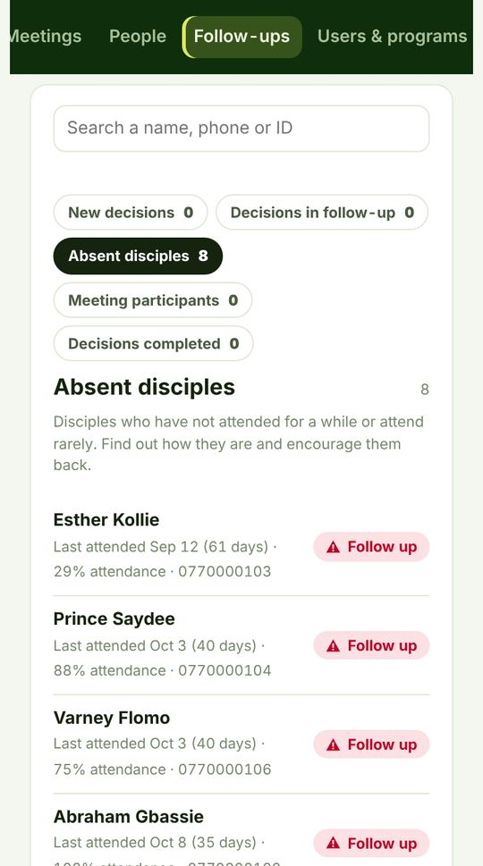
- Tap a person (or search a name or phone).
- Under Log a follow-up, choose how you reached them, write what happened, and the next step if there is one.
- For a decision, set its progress: Contacted, Joined a class, Not reachable or Closed. Save.
People
Open People. The right side first shows a summary of the list (gender, age, area, class). Tap a name to see that person's details; ← Back to the list returns.
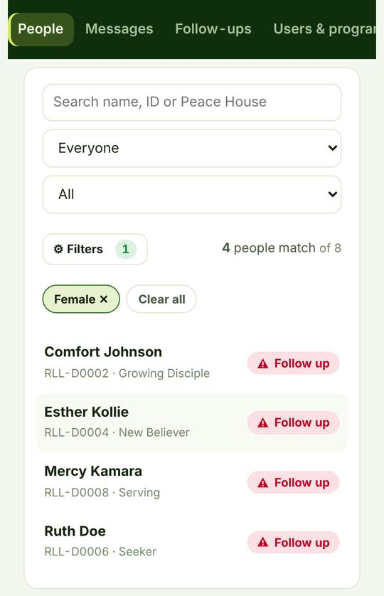
- Search by name, ID, phone or Peace House code. Choose Everyone / Disciples / Participants and All / Active / Inactive.
- ⚙ Filters narrows the list further: class or program, area, gender, age group, counselor, date joined, attendance, last attended, decision, or a meeting they came to. Each filter shows as a chip; tap it to remove.
- ⬇ Download saves exactly the people showing: Contact list, Full details (only if allowed), or Choose columns. Phone numbers are only included for people who gave consent.
- Center leaders and counselors: open a person and tap Edit to correct their details. On the People form you can only put someone in a discipleship class; outreaches are recorded by marking meetings.
Running the tracker
- Users & programs — add users with their role, PIN and gender (needed for counselors). Tick Can download full details only for people who need it. For each program set who leads it, who marks it, and Who can attend (Everyone, Women only, Men only).
- Import list — bring in an Excel or CSV list. The app shows who already exists, who might be the same person and who is new before anything is saved. You can undo an import.
- Import review — check possible duplicates and merge them, or fix missing details in one tap.
- Activity log — every change, with who made it. Deleted records can be restored from here.
- In People, ⚙ Filters → Counselor → Counselor of the other gender finds old assignments to correct.
Good to know
- Classes: not marked on a class day = absent. Meetings: not marked present = absent.
- Visitors are never counted absent and are not added to the class list unless they join.
- No class this day keeps everyone's attendance fair when a class could not meet.
- Women only / Men only meetings accept only that gender. Women counsel women, men counsel men.
- Phone numbers are shared in downloads only when the person gave consent.
- Registering or marking someone does not make you their counselor — a center leader assigns counselors.
If something is not working
- “Could not reach the tracker”
- Check your data or Wi-Fi and try again. Your marks are kept on the phone until saved.
- “Your session has ended”
- For safety you are signed out after a while. Sign in again with your PIN.
- I can't see a class, meeting or screen
- You only see what you are assigned to. Ask your center leader to add you as leader, marker or registrar.
- “… is for women only / men only”
- That person's gender doesn't match the meeting. Check their gender is recorded correctly.
- I made a mistake
- Open the date or person again, correct it and save. A center leader can restore deleted records from the Activity log.
- Wrong PIN or forgot my PIN
- Ask your center leader or administrator. After many wrong tries everyone must wait 10 minutes.